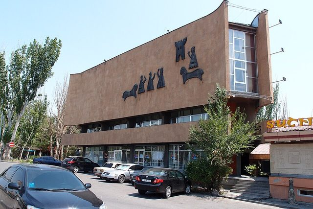

Home / Crossroads and Golden Ages / Persia, Caucasus and Central Asia
Encyclopedia ID 552
Chess
Also known as Shakhmat

Chaturanga is the ancient Indian four-division army game from about the 7th century CE that led to chess; a historical-rules version could showcase it.
Heritage note
Part of the living heritage of Armenia, Azerbaijan, India.
Origins
Usually placed in the era of Crossroads and Golden Ages (about 500 to 1500), although its exact origins are uncertain, within the cultural world of Persia, Caucasus and Central Asia.
Play it
Sources
Related entries


More from Armenia


Kochari
Armenia · Dances
Kokh
Armenia · Wrestling and martial sports
Lavash Baking
Armenia · Crafts and making